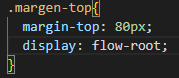
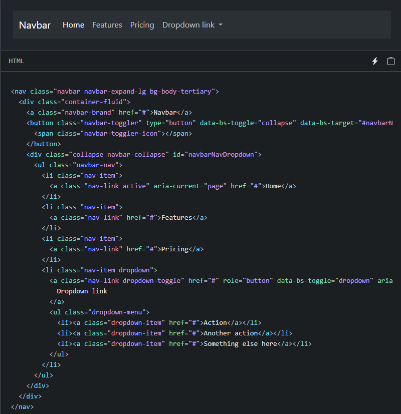
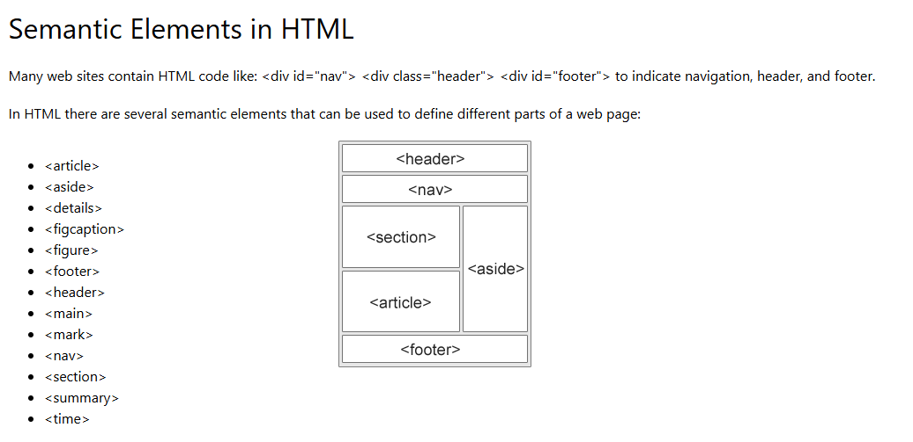

Contenidos e Investigación
Docker
Dcocker es un sistema de software TI que es utilizado para organizar "contenedores", estas se pueden utilizar como maquinas virtuales muy livianas y modulares. Con Docker se obtiene la felxibilidad necesaria para crearlos, implementarlos, copiarlos y trasladarlos de un entorno a otro, esto permite optimizar las aplicaciones para la nube.

Ejemplos Docker


Estos ejemplos muestran cómo Docker fue utilizado para empaquetar la aplicación con el servidor Nginx y archivos web en un contenedor independiente. Garantizando que el sitio web funcione exactamente igual en todos los equipos, eliminando problemas de compatibilidad.
Comandos Docker
Son las instrucciones que se ejecutan desde la línea de comandos para interactuar con el motor de Docker. Permiten crear, administrar y controlar el ciclo de vida de contenedores, imágenes, redes y volúmenes de manera eficiente
Ejemplos
-
Para descargar y ejecutar Docker en segundo plano
docker run -d -p 8080:80 --name mi-servidor- nginx -
Para ver la lista de contenedores que se están ejecutando actualmente
docker ps -
Para entrar a la consola interactiva del contenedor Nginx que se acaba de crear
docker exec -it mi-servidor bash -
Para contruir una imagen propia basada en un Dockerfile ubicado en la carpeta actual
docker build -t mi-aplicacion:1.0 -
Para detener y eliminar el contenedor que creamos
docker stop mi-servidordocker rm mi-servidor
CSS (Cascading Style Sheet)
CSS es el lenguaje de hojas de estilo utilizado para definir la apariencia, el diseño y la presentación del documento escrito en HTML. Permite controlar colores, fuentes, alineaciones y layouts adaptables (responsive)
Ejemplos

Bootstrap
Bootstrap es un framework de código aierto de HTML, CSS Y JavaScript ampliamente utilizado para el desarrollo web de sitios adaptables (responsive) y priorizados para dispositivos móviles. Incluye componentes precalculados y un sistema de rejillas (Grid) para agilizar el maqueteado.
Ejemplos

Etiquetas semanticas del HTML
Son las etiquetas fundamentales utilizadas de manera recurrente para estructurar el contenido básico de una página web, como encabezados, párrafos, enlaces, imágenes y listas.
